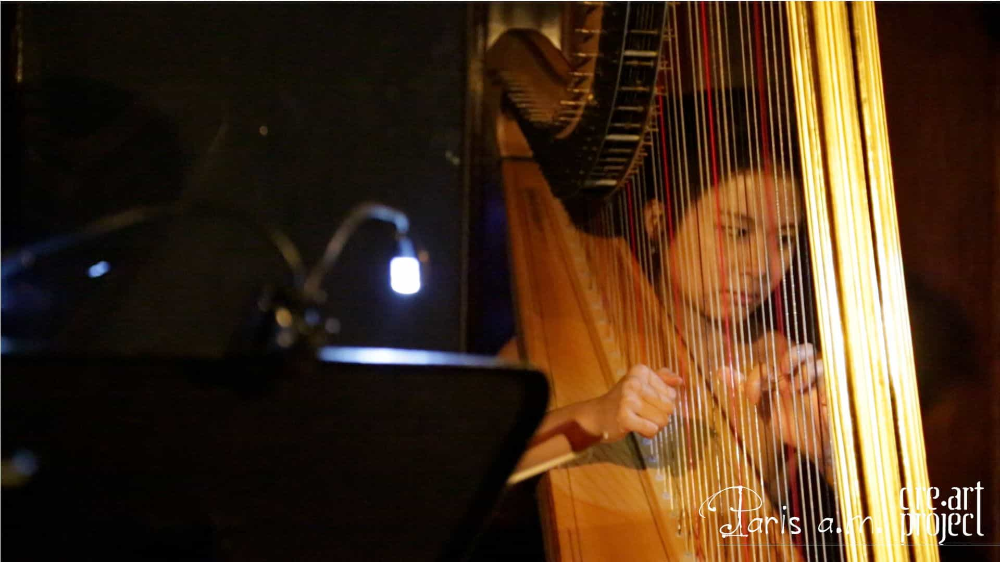
Paris a.m., a production that explores how the city of Paris and its artists inspired the age of Impressionism. The show interweave visual projections and actors reciting French poetry within the chamber music of Debussy, Roussel, and Pierne.
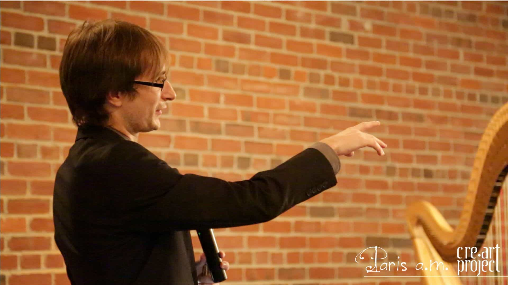
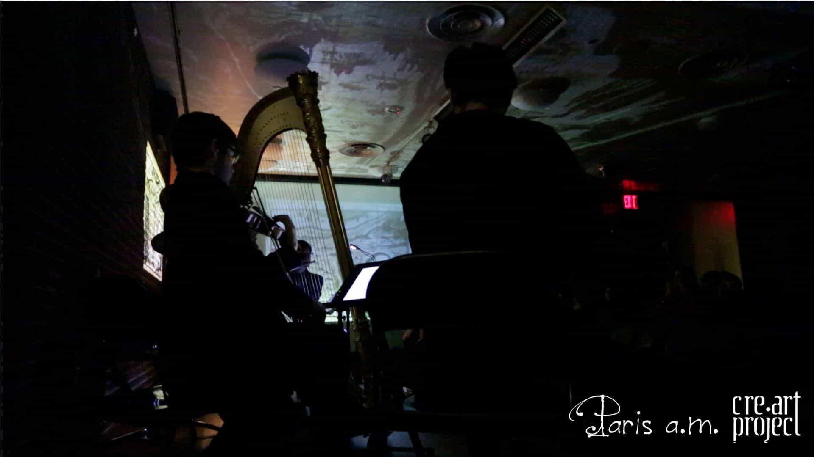
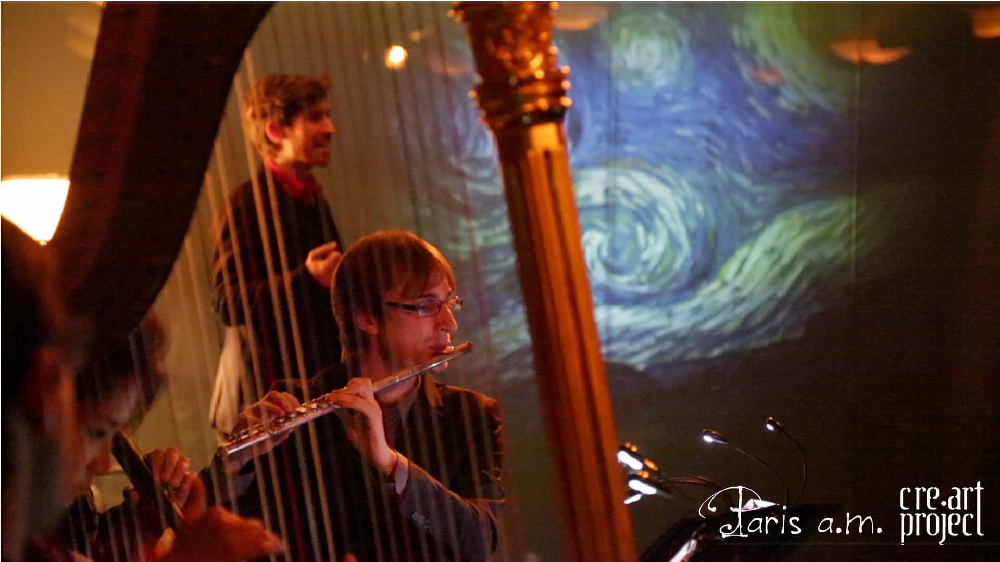
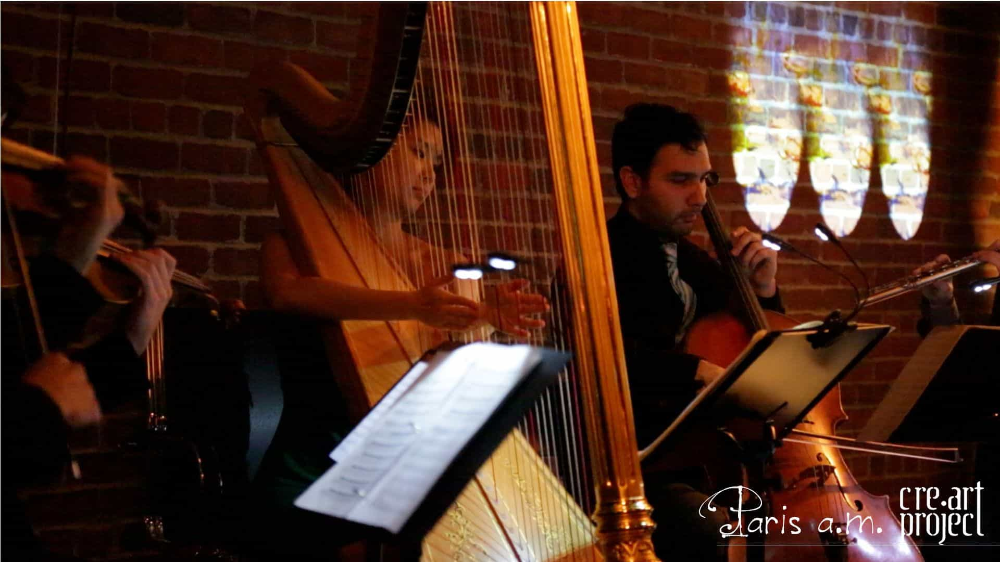
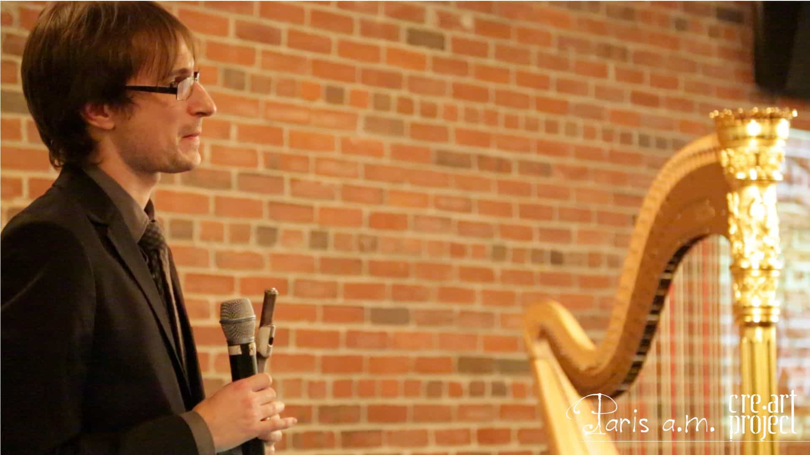
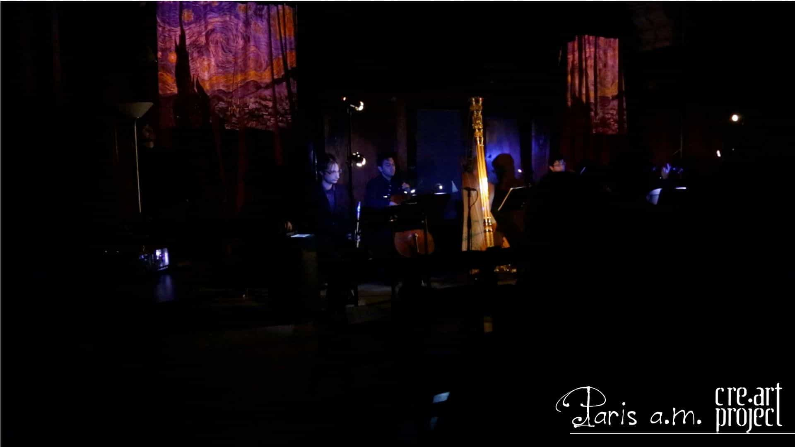
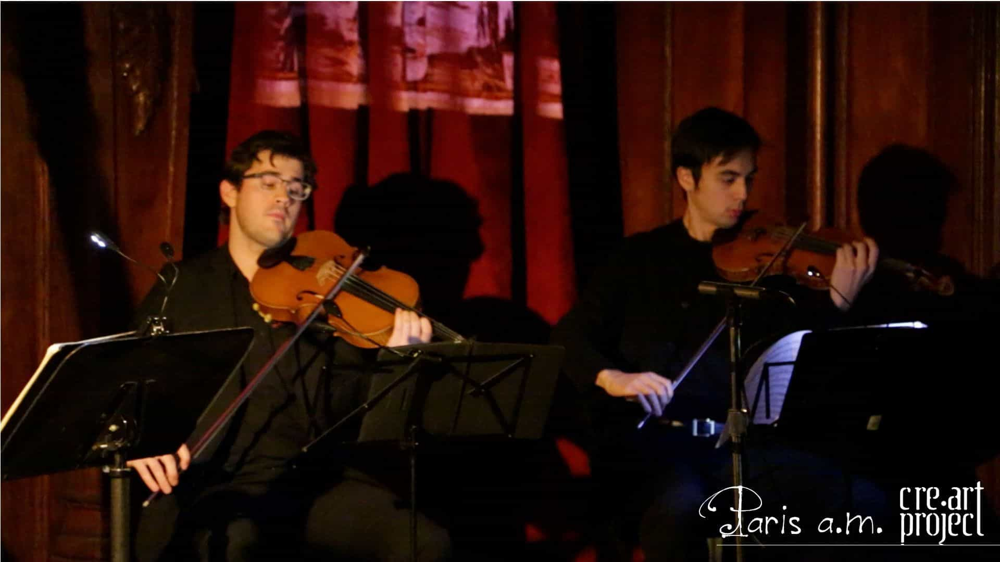
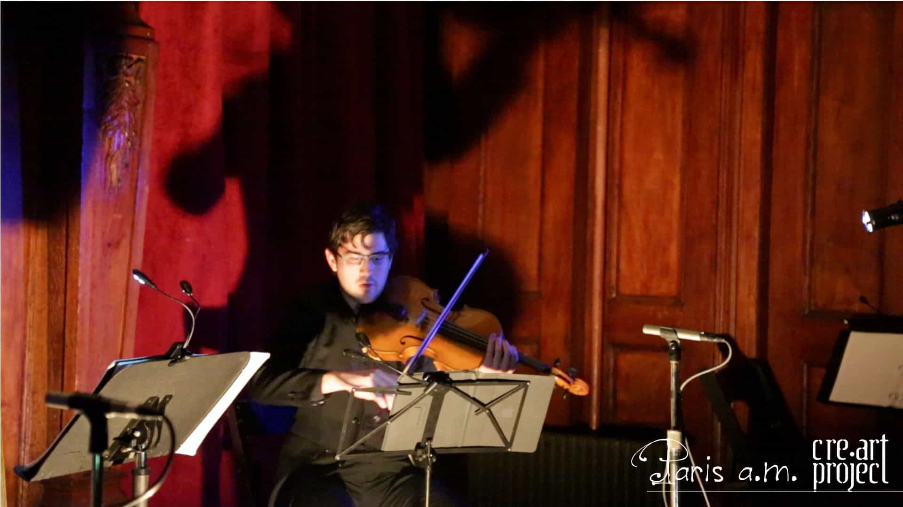
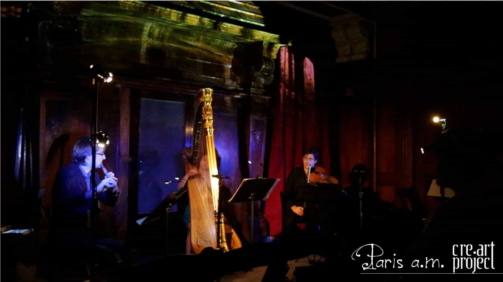
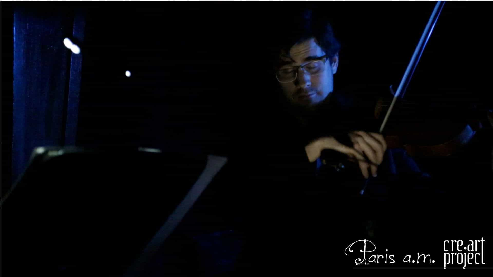
Albert Roussel
Serenade Op. 30 [15’]
Sonata for Flute, Viola y Harp [18’]
Voyage au pays du Tendre [12’]